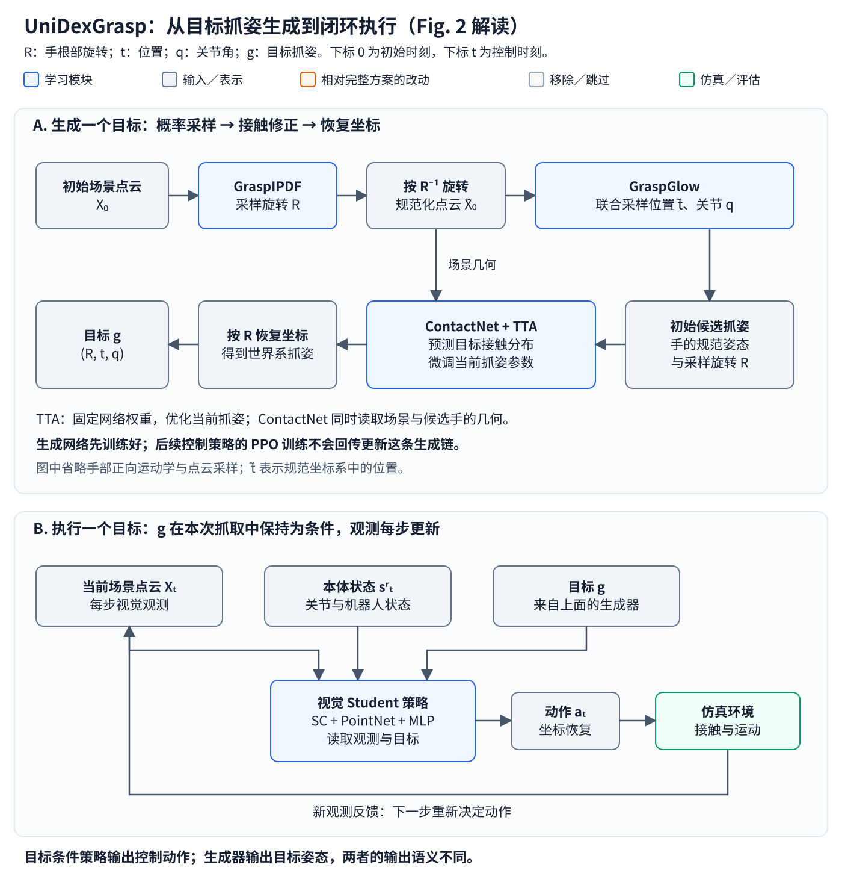
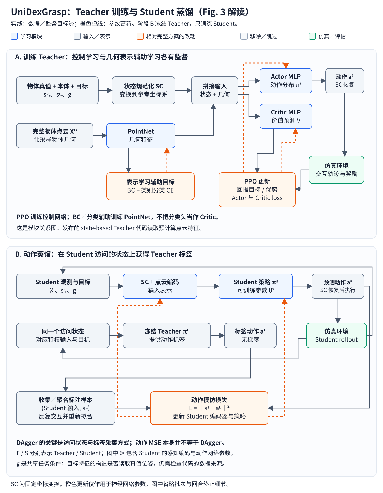
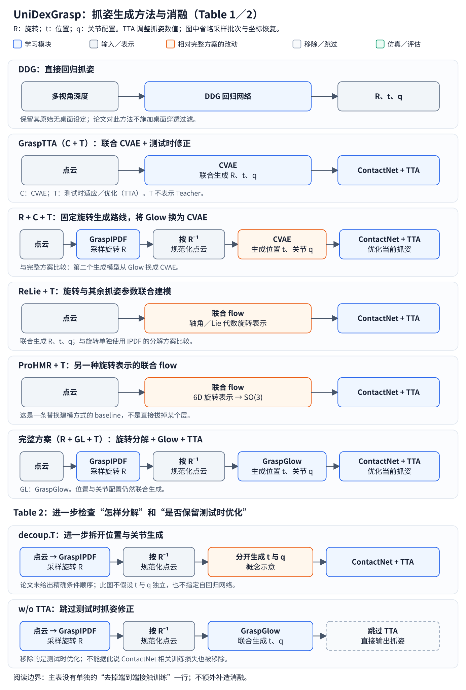
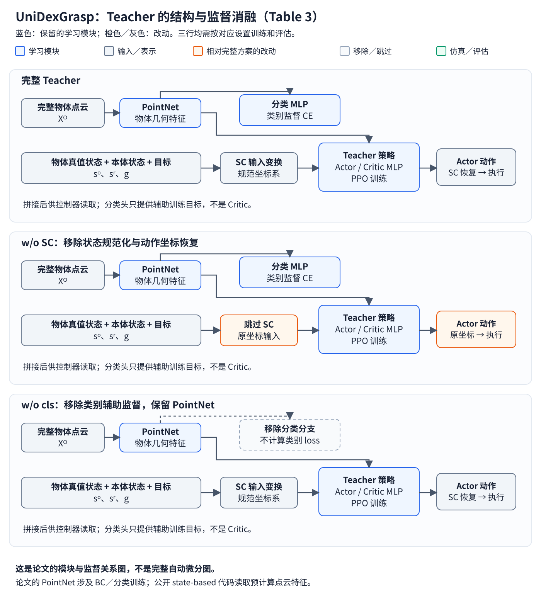
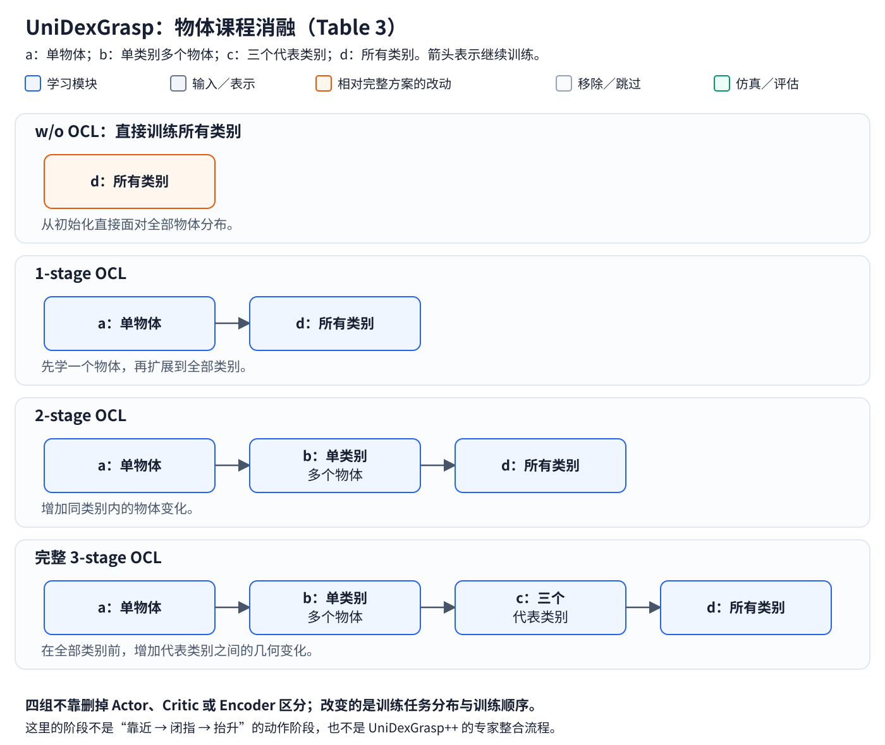
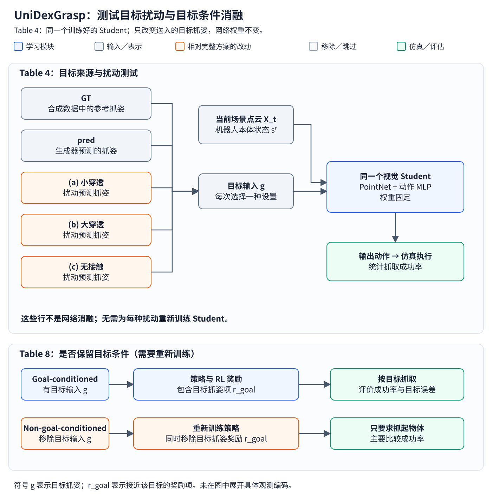

阅读位置：灵巧手 RL 研究地图 → Actor–Critic 与 PPO → Teacher–Student 与 DAgger → 本文。生成模型的通用背景见动作生成方法，读实验的通用方法见RL 实验：对照、指标与泛化。已经读过 HORA 后，可以重点比较两篇如何转换训练与执行的信息接口。
论文：Yinzhen Xu 等，UniDexGrasp: Universal Robotic Dexterous Grasping via Learning Diverse Proposal Generation and Goal-Conditioned Policy，CVPR 2023。本文于 2026-10-29 核对论文 v2、项目页及官方代码固定版本。以下讨论原版 UniDexGrasp；UniDexGrasp++ 的 generalist–specialist 训练不属于本文方法。框图为重新绘制的解释图，不是原论文截图。
1. 任务与贡献：先决定怎样抓，再学习怎样执行
UniDexGrasp 研究桌面灵巧抓取：给定物体与桌面的点云，生成一个目标抓姿，再让 Shadow Hand 从初始位置运动过去、建立接触并抬起物体。训练与测试覆盖多种物体，并进一步考察未见物体类别。
这与 HORA 的起点不同。HORA 从已经稳定抓持的物体开始，研究持续手内旋转与适应；UniDexGrasp 要处理从桌面接近、形成抓握、抬升的执行过程，同时允许同一物体对应不同抓法。
整篇方法分为两个任务模块：
初始场景点云 → 抓姿生成器 → 一个目标抓姿 g
↓
实时观测 + g → 目标条件控制策略 → 连续动作 → 抓起物体
目标抓姿是手掌位姿与手指配置，不是一条已经给定的运动轨迹。执行策略必须通过反馈决定如何接近、闭合和抬升。生成器学习多解的几何分布，控制器学习接触过程中的动作；两个问题分别训练、分别评价。
| 贡献位置 | 本文设计 | 对应的研究困难 |
|---|---|---|
| 抓姿概率模型 | GraspIPDF 生成旋转，GraspGlow 条件生成位置与关节 | 同一物体有多种有效抓法，旋转空间与欧氏空间性质不同 |
| 抓姿物理修正 | ContactNet 辅助训练与测试时接触优化 | 生成模型可能输出穿透或接触不准确的抓姿 |
| 跨物体 RL | 状态规范化、物体课程、几何表示辅助监督 | 直接面对复杂物体分布，策略可能连训练任务都学不好 |
| 感知接口转换 | 特权 Teacher → 视觉 Student 的动作模仿 | 在较容易的状态输入下先获得控制能力，再学习视觉输入下的动作 |
| 数据与评测 | 大规模合成抓姿及生成／执行分开的评测 | 抓姿合理、抓法多样和执行成功需要不同证据 |
PPO、PointNet、Teacher–Student 都是已有组件。论文的研究主张落在这些组件如何组合以支持多样、跨物体的目标条件抓取，而不是提出一种新的 PPO 更新公式。论文 §3
2. 先统一符号与信息来源
| 符号 | 含义 | 在流程中的角色 |
|---|---|---|
| \(t\) | 控制时间步 | 下标 \(t\) 表示执行过程中的当前时刻 |
| \(X_0\) | 初始时刻的物体与桌面点云 | 抓姿生成的条件 |
| \(X_t\) | 当前场景点云 | Student 的实时视觉输入 |
| \(X^O\) | 预采样的完整物体点云 | Teacher 的几何输入，与局部可见点云不同 |
| \(R\in\mathrm{SO}(3)\) | 手掌根部的三维旋转 | 抓姿中的朝向；\(\mathrm{SO}(3)\) 是合法三维旋转组成的空间 |
| \(\mathbf t\in\mathbb R^3\) | 手掌根部的位置 | 粗体 \(\mathbf t\) 是平移向量，不是时间步 |
| \(\mathbf q\in\mathbb R^K\) | 手指关节角向量 | \(K\) 是所用关节配置的维度 |
| \(g=(R,\mathbf t,\mathbf q)\) | 一个目标抓姿 | 规定希望形成的手物关系 |
| \(\widetilde{\cdot}\) | 经过坐标变换的量 | 生成和执行模块分别有自己的规范坐标定义 |
| \(s_t^r\) | 机器人本体状态 | 关节、手掌状态及相关控制记录等 |
| \(s_t^o\) | 物体真实状态 | 物体位姿、速度等特权信息 |
| \(\mathcal S_t^E,\mathcal S_t^S\) | Teacher、Student 的输入集合 | 上标 \(E\) 表示 Expert／Teacher，\(S\) 表示 Student |
| \(\pi^E,\pi^S\) | Teacher、Student 策略 | 将各自输入转换成动作或动作分布 |
| \(a_t\) | 当前动作 | 驱动机器人，产生下一个状态与奖励 |
| \(V\) | Critic 预测的状态价值 | Teacher 的 PPO 训练辅助量 |
| \(\vartheta\) | 本文统称网络参数 | 避免与实验表中表示关节角的 \(\theta\) 混淆 |
| \(c_i\) | 物体第 \(i\) 个点的接触热度 | ContactNet 预测的接触表示 |
原文在部分指标中用 \(\theta\) 表示关节角，本文正文统一写成 \(\mathbf q\)，引用 Table 1 时保留 \(\sigma_{\theta\mid R}\)。图中的 \(\oplus\) 或“拼接”表示合并特征，不代表求和。
3. Fig. 2：生成的是目标，执行的是闭环策略

打开 Fig. 2 解释图。左侧生成器通常在一次抓取开始时提供目标，右侧控制器则在执行过程中反复读取观测。图中从左到右的数据依赖，不意味着 RL 梯度会穿过整个系统更新生成器。

原图中的初始点云由深度图融合得到，并使用物体与桌面的真值分割。分割与坐标预处理也是实验输入的一部分；理解“视觉输入”时，应把这些前处理假设一起记录。原文 Fig. 2
3.1 GraspIPDF：从一个旋转分布里采样朝向
抓姿分布按以下方式分解：
\[ p(g\mid X_0) =p(R\mid X_0)\,p(\mathbf t,\mathbf q\mid X_0,R). \]
这不是假设旋转与其余变量独立。第二项明确以旋转 \(R\) 为条件：选择从哪个方向抓之后，再决定手掌放在哪里、手指怎样弯曲。
GraspIPDF 用点云特征与候选旋转构造分数，经归一化得到旋转分布。训练时，提高数据集中有效旋转的似然；测试时，在旋转空间的候选网格上查询分数，再按概率采样。它输出的关键对象是一个可采样分布，而不是唯一的“正确角度”。
旋转生成器的学习信号来自合成抓姿数据。这个阶段没有用机器人 rollout 的累计奖励训练 PPO。
3.2 GraspGlow：在选定旋转下联合生成位置和手型
采样 \(R\) 后，将点云变换到对应坐标系：
\[ \widetilde X_0=R^{-1}X_0,\qquad \widetilde{\mathbf t}=R^{-1}\mathbf t. \]
上式按列向量约定书写；具体实现的点云张量可能使用行向量乘法。这个变换使 GraspGlow 面对的任务近似成为：在手掌朝向已经固定的坐标系中，寻找合适的位置与手型。
PointNet 提取 \(\widetilde X_0\) 的几何特征，条件 Normalizing Flow 建模：
\[ p(\widetilde{\mathbf t},\mathbf q\mid\widetilde X_0). \]
训练时，对参考抓姿使用负对数似然；采样时，从简单基础分布取一个随机向量，再通过可逆变换生成位置与关节配置。多个随机向量可以生成多个抓法。
这里的 Glow 属于 Normalizing Flow，与 VLA 中常见的 Flow Matching 不是同一个训练方案。前者在这里依靠可逆变换与密度计算；后者通常拟合从噪声到数据的速度场。两者的通用区别见动作生成方法。
3.3 ContactNet：接触目标与抓姿修正
原始生成结果可能让手指轻微穿进物体，或者离物体还有一段间隙。ContactNet 读取规范坐标系下的物体点云与手部点云，预测物体表面各点应具有怎样的接触热度。
手部点云来自当前抓姿的正向运动学与手网格采样。ContactNet 的作用是产生接触模式；它不直接预测抓取动作，也不承担 RL Critic 的职责。
论文使用接触一致性、物体穿透、桌面穿透和手部自穿透四类项。它们参与两个不同过程：
| 使用位置 | 被调整的对象 | 对之后样本的影响 |
|---|---|---|
| 生成器训练／微调 | 生成网络的参数 | 改变之后生成抓姿的分布 |
| 测试时优化 TTA | 当前这一个抓姿的参数 | 修正当前候选，不等于重新训练生成网络 |
论文所谓接触辅助的 end-to-end training 有明确冻结边界：旋转网络在这一阶段冻结。不能把“end-to-end”读成 IPDF、Glow、ContactNet 和 RL 控制器全部一起更新。生成方法、GraspGlow 实现
发布代码中的 TTA 使用 Adam([hand_pose])，优化器接收当前抓姿张量。它通过几何损失修改该张量，没有 PPO 的 reward、advantage 或策略概率比。TTA 实现
3.4 目标生成与目标执行的训练边界
在后续 RL 控制训练中，不是把抓取失败的梯度一路传回 GraspIPDF 和 GraspGlow。生成模块与执行模块是分开学习的；训练数据中的有效抓姿也可作为控制任务的目标。评估端到端系统时，再使用生成器提供的目标。
因此，“生成的 \(g\) 进入控制策略”描述输入关系，“PPO 更新哪些参数”描述梯度关系，两条关系不能混在同一根箭头里理解。
4. Fig. 3：先学状态策略，再学视觉动作映射

打开 Fig. 3 解释图。Teacher 和 Student 都以目标为条件，但观察环境的接口不同。图中 Actor 决定动作，Critic 估计价值；分类头提供辅助表示监督，三者用途不同。

4.1 Teacher 输入不只有一个“base MLP”
论文概念上定义：
\[ \mathcal S_t^E=(s_t^r,s_t^o,X^O,g),\qquad \mathcal S_t^S=(s_t^r,X_t,g). \]
Teacher 获得完整物体几何和真实物体状态。点云先经过 PointNet 提取特征，再与其他输入拼接，供控制网络读取。Actor 输出动作分布或动作均值，Critic 输出状态价值。
因此，UniDexGrasp 并不是“没有 object encoder”。它使用几何编码器，只是没有采用 HORA 那种显式的“特权环境 latent → 历史 latent”对齐结构。
论文还采用源于 ILAD 的几何表示学习做法：通过行为克隆训练 PointNet，并加入物体类别分类目标。分类监督塑造几何表示，PPO 学习如何执行控制；不能仅凭图中有拼接，就断言同一个 PPO loss 更新了所有编码器。
发布代码的 state-based 训练路径读取预计算的 64 维物体点云特征；需要将这条实现路径与论文的表示训练描述区分。复现时应分别追踪特征如何预训练、如何缓存、控制器何时读取它们。Teacher 方法、状态与特征实现
4.2 PPO 学的是完成目标所需的动作
Teacher 的目标可写成：
\[ \max_{\vartheta_E}\; \mathbb E_{\pi^E_{\vartheta_E}} \left[\sum_{t=0}^{T-1}\gamma^t r(s_t,a_t,g)\right]. \]
\(\vartheta_E\) 是 Teacher 参数，\(T\) 是回合长度，\(\gamma\) 是折扣因子，\(r\) 是环境定义的单步奖励。期望涵盖策略采样、物体与环境变化。
奖励由目标抓姿、接近物体、抬升与移动到目标位置等部分组成：
\[ r=r_{\mathrm{goal}}+r_{\mathrm{reach}} +r_{\mathrm{lift}}+r_{\mathrm{move}}. \]
目标抓姿项衡量当前手物相对姿态与目标的差距；接近项鼓励接触前的靠近；抬升与移动项推动任务完成。抬升项还与达到目标抓姿的阈值条件关联，并不是四个完全独立、无条件生效的分数。
PPO 控制更新不要求每一步都有“第 17 步必须发这个动作”的示范标签；它可以与上一节的 BC 表示学习并存。目标 \(g\) 规定希望实现的状态，交互产生奖励，PPO 用优势估计改进 Actor，并用回报目标训练 Critic。完整计算链见 RL02。
4.3 状态规范化：把已知坐标变化从学习负担中移走
执行阶段的 State Canonicalization，简称 SC，针对场景绕重力轴旋转的对称性。将状态与目标转换到约定的静态参考坐标系，使同一抓取问题不必因为整体朝向变化而被当成大量无关样本。
策略在规范坐标系中输出控制量，再将涉及方向的动作恢复到执行坐标系。这与生成阶段按候选 \(R^{-1}\) 变换点云的目的相关，但不是同一个坐标变换：生成阶段处理候选抓取朝向，执行阶段处理绕竖直轴的场景对称性。
SC 是确定的几何处理，不是一个从历史中辨识物体属性的适应网络。
4.4 物体课程：同一个策略逐步面对更复杂的分布
Object Curriculum Learning，简称 OCL，将训练范围逐步扩展：单个物体 → 同类别多个物体 → 三个代表类别 → 全部类别。
它让策略先获得基本抓取行为，再处理更大的形状变化。这个过程改变训练分布与顺序，不要求更换 Actor 的网络结构，也不是 UniDexGrasp++ 的多专家整合。
4.5 Student：在自己访问的状态上向 Teacher 学动作
Student 用实时点云编码、机器人本体状态和目标生成动作。Teacher 在相同仿真状态上读取特权输入，提供动作标签。
为清楚区分分布与具体动作，记 \(m_E(\mathcal S_t^E)\) 和 \(m_S(\mathcal S_t^S)\) 为两者用于回归的动作输出。代码中的均方误差可以概念化写成：
\[ \mathcal L_S =\mathbb E_{(\mathcal S_t^S,a_t^E)\sim\mathcal D} \left[\left\|m_S(\mathcal S_t^S) -\operatorname{stopgrad}(a_t^E)\right\|_2^2\right], \qquad a_t^E=m_E(\mathcal S_t^E). \]
\(\mathcal D\) 是监督样本集合，stopgrad 表示 Teacher 动作作为固定标签；该损失更新 Student，不通过标签分支更新 Teacher。
DAgger 的关键不在于用了动作 MSE，而在于数据从哪里来。Student 执行动作后可能进入 Teacher 完美轨迹上没有的偏差状态，Teacher 再为这些状态提供纠偏标签；持续聚合这种数据，使模仿训练覆盖 Student 实际遇到的情况。
# 概念流程，突出执行者、标注者和更新对象；省略并行环境的终止／重置处理
freeze(teacher)
buffer = SupervisedBuffer() # 实际实现可以是有限容量的循环缓冲区
obs_student, obs_teacher = env.reset()
for iteration in range(num_iterations):
for step in range(rollout_steps):
with no_grad():
action_student = student(obs_student)
action_target = teacher(obs_teacher)
buffer.add(obs_student, action_target)
obs_student, obs_teacher = env.step(action_student)
batch_obs, batch_target = buffer.sample()
loss = mse(student(batch_obs), batch_target)
update(student, loss)
这段伪代码不表示两个独立环境：同一个仿真状态分别构造 Teacher 与 Student 的输入。官方 DAgger 路径使用 Student 动作推进环境，保存同一时刻的 Expert 动作，并用有限容量缓冲区训练。它不要求永远保存全部历史样本。动作蒸馏循环、缓冲区
5. 信息接口、冻结边界与 HORA 的差别
5.1 Goal 的角色与可获得性是两个问题
在论文的概念框架中，\(g\) 是 Teacher 和 Student 共同使用的目标。由点云生成的目标抓姿原则上可供执行端获得，不能因为 Teacher 使用它，就将它自动归为特权信息。
但“原始目标可获得”不保证由它计算出的所有输入都可获得。例如，要构造当前手掌相对于物体的目标误差，还需要当前物体位姿。目标是任务角色；是否依赖仿真真值，是信息来源。二者应分别检查。
公开代码存在一个需要复现者注意的边界。 所核对版本的视觉 Student 丢弃显式 object state 切片 191:207，却保留 207:236 的 goal-related 输入。其中 delta_target_hand_pos 和 delta_target_hand_rot 由仿真中的 object_pos、object_rot 参与计算。
因此，更准确的描述是：论文设计将显式特权状态 Teacher 蒸馏为视觉 Student；这份发布实现仍需进一步解决目标相对量的物体位姿依赖，不能只看 Student 没有直接读取物体状态向量，就宣称整个输入链已经严格不含 oracle 信息。这也不等于说“目标 \(g\) 本身必然是特权信息”。Student 输入切片、目标误差构造
5.2 每个阶段究竟更新什么
| 阶段 | 主要输入／监督 | 更新对象 | 不应混入的更新 |
|---|---|---|---|
| 旋转分布学习 | 点云与数据集抓取旋转 | GraspIPDF | 无 PPO 控制训练 |
| 位置、关节分布学习及接触辅助微调 | 规范点云、参考抓姿、接触与穿透损失 | GraspGlow 等该阶段指定参数；旋转网络在接触微调中冻结 | 不反向更新执行策略 |
| ContactNet 学习 | 物体、手部点云与接触标签 | ContactNet | 不预测累计回报 |
| TTA | 当前候选抓姿与接触目标 | 当前抓姿变量 | 不等于微调网络权重 |
| Teacher 学习 | 状态、目标、环境奖励；几何表示另有辅助监督 | PPO 控制网络，以及对应表示学习阶段的参数 | 不把 RL 梯度传回抓姿生成器 |
| Student 蒸馏 | Student 访问状态与 Teacher 动作标签 | Student 感知／动作网络，取决于冻结配置 | Teacher 作为固定标注器 |
| 执行与评估 | 生成目标、实时观测 | 通常不更新策略权重 | 每步更新观测不等于在线训练 |
这张表区分的是任务阶段。具体哪一个编码器冻结，仍需读取所用配置；公开实现支持不同视觉 backbone 和冻结选项，不宜把一种配置说成所有变体都一样。
5.3 与 HORA 对照
| 维度 | HORA | UniDexGrasp |
|---|---|---|
| 主要任务 | 已抓持物体的持续手内旋转 | 依据目标抓姿执行桌面抓取与抬升 |
| RL 控制学习 | PPO 学特权条件控制器 | PPO 学目标条件 Teacher，并配合表示学习与课程 |
| 重要编码器 | 物体数值信息编码器、历史适应模块 | 完整物体／实时场景的点云编码器 |
| 迁移的监督对象 | 环境 latent | Teacher 动作 |
| 迁移／蒸馏阶段保留什么 | 保留底层控制器，替换环境条件来源 | 学习视觉输入下的 Student 动作映射 |
| 执行时的适应 | 历史变化使 latent 持续变化 | 当前视觉与本体反馈使动作持续变化 |
| 核心实验证据 | 包含真机迁移与适应验证 | 本文主要抓取执行结果在仿真中 |
HORA 的历史模块也在使用估计 latent 的控制器所访问的状态上接受监督，但核对的原版实现没有原始 DAgger 那样跨轮次聚合数据的机制。因此适合称为 on-policy latent supervision，不能因为存在 Teacher 和监督 loss，就直接等同于严格的数据聚合 DAgger。
另一方面，latent 回归并不从理论上排斥 DAgger 式采集；“监督什么”与“如何收集、聚合数据”是两个轴。UniDexGrasp 的动作误差与 HORA 的 latent 误差，首先说明监督接口不同。
DR 也不由这两种结构决定。域随机化改变训练环境分布，Teacher–Student 组织信息迁移；带不带显式适应 Encoder，都可能使用 DR。不能把“没有 HORA 式适应分支”直接判定成某个 DR baseline。相关通识见 RL03。
6. 实验地图：生成、执行、泛化分开读
原版执行实验主要使用 Isaac Gym 仿真。生成数据集包含约 112 万个抓姿、5519 个物体、133 个类别；执行实验过滤过大的物体后，使用 3200 个训练物体、241 个测试物体。官方执行划分将测试集分成 141 个已见类别新物体与 100 个未见类别物体。生成与执行的数据范围不能直接互换。数据与环境设置、官方执行数据说明
| 实验 | 对象 | 回答的问题 |
|---|---|---|
| Table 1 | 静态抓姿生成 | 样本是否兼顾质量与多样性 |
| Table 2 | 生成器消融 | 变量分解与 TTA 是否必要 |
| Table 3 | State-based Teacher | 基线方法与训练设计的作用 |
| Table 4 | 固定的视觉 Student | 目标来源及目标误差对执行的影响 |
| Table 8 | 目标条件／非目标条件执行 | 抓起来与按指定姿态抓是否同时满足 |
| Table 9 | 概率生成模型 | 对参考抓姿分布拟合得如何 |
执行表的三列含义是：训练物体、已见类别中的新物体、未见类别。这里的 Train 是在训练物体集合上评估成功率，不是训练 loss；seen／unseen 也不是仿真／真机的区别。
7. Table 1：静态抓姿的质量与多样性
7.1 指标不能互相替代
| 指标 | 含义 | 阅读边界 |
|---|---|---|
| \(Q_1\uparrow\) | 使抓姿失稳所需的最小外部 wrench 对应的分析质量指标 | Wrench 同时包含力和力矩；不是 Critic 的 Q，也不是成功率 |
| obj. pen. \(\downarrow\) | 物体点云进入手网格的最大穿透深度，cm | 检查几何可行性 |
| \(\sigma_R\uparrow\) | 旋转样本标准差，degree | 整体抓取方向的多样性 |
| \(\sigma_{T\mid R}\uparrow\) | 固定旋转后的位置标准差，cm | 同一朝向下还存在多少位置变化 |
| \(\sigma_{\theta\mid R}\uparrow\) | 固定旋转后的关节配置标准差，degree | 同一朝向下还存在多少手型变化 |
| \(\sigma_{\mathrm{keypoints}}\uparrow\) | 15 个手部关键点位置的平均标准差，cm | 整个生成流程的空间多样性 |
表头与附录按标准差解释 \(\sigma\)，不要因主文个别 variance 表述而改读成平方单位。/ 表示未报告或不适用，不是零。
\(Q_1\) 的计算还带有有效性规则：接触容差放宽到 1 cm，穿桌超过 1 cm 或穿物体超过 5 mm 时置零。因此一个方法的低 \(Q_1\) 可能同时反映接触质量与几何无效比例。多样性则必须与这些质量指标联合看，随机生成大量无效姿态也能得到很大的标准差。生成指标定义
7.2 基线与组件替换的结构

打开生成方法对照图。图中 R、C、GL、T 分别表示 GraspIPDF、CVAE、GraspGlow、TTA；名称中的 T 是优化，而 \(\sigma_{T\mid R}\) 的 T 是 translation。

| 方法 | seen \(Q_1\) | seen pen. | unseen \(Q_1\) | unseen pen. | \(\sigma_R\) | \(\sigma_{T\mid R}\) | \(\sigma_{\theta\mid R}\) | \(\sigma_{\mathrm{keypoints}}\) |
|---|---|---|---|---|---|---|---|---|
| GraspTTA，C+T | 0.0269 | 0.354 | 0.0239 | 0.363 | 4.9 | / | / | 2.909 |
| DDG | 0.0357 | 0.319 | 0.0223 | 0.338 | 0.0 | / | / | 0.000 |
| R+C+T | 0.0362 | 0.251 | 0.0336 | 0.235 | 128.0 | 0.095 | 0.227 | 5.982 |
| ReLie+T | 0.0190 | 0.219 | 0.0191 | 0.225 | 109.9 | / | / | 6.698 |
| ProHMR+T | 0.0210 | 0.202 | 0.0221 | 0.192 | 88.4 | / | / | 5.837 |
| Ours，R+GL+T | 0.0423 | 0.205 | 0.0322 | 0.220 | 127.6 | 1.143 | 5.806 | 6.389 |
上表按原文整理；穿透与关键点指标单位为 cm，角度指标为 degree。Table 1
最有解释力的是三组比较：
- C+T → R+C+T： 将旋转交给独立的分布模型后，抓取方向多样性大幅增加，检查的是“旋转单独建模”的作用。
- R+C+T → R+GL+T： 两组旋转标准差相近，但位置条件标准差从 0.095 cm 增至 1.143 cm，关节条件标准差从 0.227° 增至 5.806°。这支持 Glow 在固定朝向下保留更多位置与手型组合，而不只是让手转到不同方向。
- ReLie／ProHMR → Ours： 比较将旋转表示与位置、关节放进同一个 flow，和使用独立旋转分布的区别。这里借用了这些工作的旋转建模方法，不是完整复现它们原本的所有应用任务。
DDG 是确定性回归基线，使用多视角深度输入；本文保留其无桌面设置，并不按相同规则过滤桌面穿透，因而不是只换一个模块的严格控制变量实验。
Ours 也不是每一列都最好：R+C+T 的 unseen \(Q_1\) 略高，ProHMR 的穿透更低，ReLie 的关键点多样性更高。论文主张应从质量与多样性的组合，以及条件多样性上理解，不能概括成所有指标全面领先。Baseline 实现细节
8. Table 2：分解方式与测试时修正
| 设置 | seen \(Q_1\) | seen pen.，cm | unseen \(Q_1\) | unseen pen.，cm |
|---|---|---|---|---|
| decoup.T | 0.0003 | 0.862 | 0.0061 | 0.843 |
| w/o TTA | 0.0013 | 0.744 | 0.0000 | 0.764 |
| Ours | 0.0423 | 0.205 | 0.0322 | 0.220 |
第一张对照图的最后两行对应这两个变体。
decoup.T 进一步拆开位置与关节的生成。旋转单独建模有效，并不意味着所有变量越拆越好：手掌与物体的距离，必须与手指伸展、弯曲的方式协调。结果支持本文选择的分解方式，但不能证明任意位置／关节分解模型都不可能有效。原文没有给出足够细节说明该变体的精确条件顺序，所以图中不画成未经证实的独立概率乘积或特定自回归网络。
w/o TTA 保留生成网络，跳过测试时抓姿修正。结果说明，直接采样的抓姿距离完整流程的质量仍有明显差距；不能把最终结果全部归功于一次网络前向。
移除测试时优化不等于删除训练中的所有接触损失。论文也没有单独报告“w/o end-to-end contact training”这一行，因此不能为它补画带有实验成绩的消融。\(Q_1=0\) 是静态指标结果，不能直接改写成执行成功率为零。Table 2
9. Table 3：Teacher 的方法比较与训练消融
本表评估 state-based policy。论文 §4.3 说明这一执行评估使用生成器采样的 grasp proposals；不要默认所有 Teacher 数值都是在 GT 目标下获得。
以下将均值换成百分比，省略原表的 ± 项；原表采用三个随机种子：
| 方法 | 训练物体 | 已见类别新物体 | 未见类别 |
|---|---|---|---|
| MP | 12% | 2% | 2% |
| PPO | 14% | 11% | 9% |
| DAPG | 13% | 13% | 11% |
| ILAD | 25% | 22% | 20% |
| Ours | 74% | 71% | 66% |
| w/o SC | 59% | 54% | 51% |
| w/o cls | 65% | 64% | 60% |
| w/o OCL | 31% | 23% | 21% |
| 1-stage OCL | 58% | 55% | 55% |
| 2-stage OCL | 68% | 67% | 62% |
9.1 Baseline 比较的是不同解决方案
| 方法 | 动作如何获得 | 对照意义 |
|---|---|---|
| MP | 将目标抓姿经正向运动学转成各手部关节的三维位置目标，用 CEM 搜索动作序列并通过 MPC 滚动执行，最后检查抬升 | 单靠规划能否完成复杂接触过程；没有 Actor–Critic 网络 |
| PPO | 按论文设计的目标条件奖励训练策略 | 基础 RL 配置能否直接覆盖跨物体任务 |
| DAPG | 从目标抓姿出发，通过运动规划生成示范，再加入示范辅助策略学习 | 示范能否缓解探索困难；示范不默认来自人类 |
| ILAD | 结合示范学习、行为克隆驱动的几何表示学习及改进的模仿目标 | 更强的表示与模仿方案是否足够 |
| Ours | PPO 加上规范化、物体课程、几何表示及类别辅助监督 | 这些训练设计组合后是否提高任务可学性 |
完整方法也使用 PPO，因此不能将“PPO 对 Ours”解释成作者提出了替代 PPO 的新算法。MP、DAPG、ILAD 是方法基线，不是从完整网络中各拔掉一层。控制 Baseline 细节
9.2 SC 与 cls：输入处理和辅助监督


w/o SC 去掉输入坐标规范化以及相应的动作坐标恢复，再按这一设置训练。它保留学习控制的网络，但让网络直接面对更多坐标变化。未见类别成功率从 66% 降至 51%，说明显式处理几何对称性在本文设置中有帮助。
w/o cls 去掉类别分类辅助分支／损失，保留点云和 PointNet。它考察类别监督是否让几何表示更适合跨类别控制，而不是考察“有没有视觉编码器”。分类头只参与表示训练，不是执行时输出动作的 Actor，也不是预测 return 的 Critic。
9.3 OCL：网络不变，改变任务分布顺序


设 \(a\) 为单物体，\(b\) 为单类别多个物体，\(c\) 为三个代表类别，\(d\) 为全部类别：
| 设置 | 训练顺序 | 检查的因素 |
|---|---|---|
| w/o OCL | \(d\) | 从初始化直接面对完整复杂分布 |
| 1-stage | \(a\rightarrow d\) | 先获得基本抓取能力 |
| 2-stage | \(a\rightarrow b\rightarrow d\) | 增加同类物体变化 |
| 完整 3-stage | \(a\rightarrow b\rightarrow c\rightarrow d\) | 在全部类别前引入代表性的跨类别变化 |
“3-stage”对应三次扩展、四个任务范围，不是三个网络，也不是接近、闭合、抬升三个动作阶段。
去掉 OCL 后，训练物体上的成功率也从 74% 降到 31%。这说明问题不只是测试泛化差，而是策略在困难训练分布中没有充分获得基本能力。课程改善的是学习过程本身。没有进一步核对预算匹配条件时，不能由成功率单独断言它更省总算力。OCL 消融定义
10. Table 4：固定 Student，改变输入目标

打开目标条件对照图。上半部分对应 Table 4：固定策略，改变测试目标；下半部分对应 Table 8：改变任务定义后重新训练。

| 输入目标 | 目标穿透深度，cm | 训练物体 | 已见类别新物体 | 未见类别 |
|---|---|---|---|---|
| GT | 0.117 | 68% | 65% | 63% |
| pred | 0.208 | 66% | 59% | 58% |
| a，小幅穿透 | 0.512 | 63% | 54% | 57% |
| b，较大穿透 | 1.058 | 47% | 37% | 39% |
| c，无接触 | −0.309 | 50% | 38% | 35% |
这里同样只列成功率均值。GT 是合成数据中的参考抓姿，不是人为保证完美的真实抓取。Penetration 衡量输入目标抓姿的几何状态，不是执行全过程的最大碰撞；负值在此表示存在间隙，不能理解成“越负越好”。Table 4
每组实验承担不同作用：
- GT 与 pred： 生成器的误差会给后续控制造成多大影响。
- 小幅与较大穿透： 闭环控制容忍不准确目标的能力范围。
- 无接触目标： 当目标手型不能直接形成有效接触时，策略能否仍完成抓取。
Student 每一步读取新观测，可以调整动作，因此不必机械地执行一条由目标唯一确定的轨迹；但它的训练仍受目标条件约束，目标严重错误时性能明显下降。这组结果支持一定范围的鲁棒性，不支持“任意错误目标都能纠正”。
Table 3 的 Teacher 使用预测目标，而 Table 4 第一行 Student 使用 GT 目标。两行的差距混合了策略接口与目标来源，不能直接作为纯粹的蒸馏损失；若要隔离蒸馏影响，需要在同一目标集合、初始状态和评测协议下比较。
11. 附录表：任务成功、目标一致性与分布拟合
11.1 Table 8：成功抓起与遵循指定抓法
Success 以物体最终位置判定：目标点在初始位置上方 0.3 m，回合结束时距离目标小于 0.05 m 算成功。MPE 则比较实际抓姿与目标抓姿对应关节的三维位置：
\[ e_{\mathrm{MPE}}= \frac{1}{J}\sum_{j=1}^{J} \left\|\mathbf p_j^{\mathrm{actual}}- \mathbf p_j^{\mathrm{goal}}\right\|_2. \]
\(J\) 为所比较关节数，\(\mathbf p_j\) 为正向运动学得到的关节三维位置，单位是 cm。MPE 不是关节角误差，不是动作 MSE，也不是全过程逐帧 tracking error。
MPE 只在成功抓取上计算。 因此一个方法可能只成功极少数容易样本，仍有很低的 MPE；必须与成功率联合解释。指标定义
为避免横向表格过宽，以下仅摘出 Table 8 的未见类别列：
| 方法 | 有目标 success | 有目标 MPE，cm | 无目标 success |
|---|---|---|---|
| MP | 2% | 1.8 | / |
| PPO | 9% | 5.8 | 17% |
| DAPG | 11% | 9.1 | 10% |
| ILAD | 20% | 5.6 | 23% |
| IBS-Grasp | / | / | 54% |
| Ours Teacher | 67% | 4.5 | 71% |
| Ours Student | 60% | 4.7 | 65% |
这些数字按附录原表引用。Teacher 的 67% 与主表 66%，以及 Student 的部分数值差异，原文就存在；不将不同表中的数字拼接成一套新的对照结果。
MP 的 MPE 很低，但绝大多数抓取失败，不能判断它整体最好。表注还专门说明，MP 的 train／test 分别是在合成参考抓姿和预测抓姿上优化，不能机械套用“网络训练集与测试集”的解释。
Non-goal-conditioned 版本移除目标输入及相应目标奖励要求后重新训练，不是在测试时把训练好的策略目标置零。任务从“按指定抓法抓起”变成“只要抓起”，成功率变化包含了任务约束变化。
IBS-Grasp 只参与非目标条件比较，使用 IBS 几何表示与 SAC，其实现环境为 PyBullet。它不是在同一个 Isaac Gym 配置下只把 PPO 替换成 SAC 的严格消融。Table 8 与附录分析
11.2 Table 9：参考抓姿的 log-likelihood
| 模型 | Log-likelihood，越高越好 |
|---|---|
| ReLie | −1.540 |
| ProHMR | −1.710 |
| R+GL | 10.908 |
这张表评价模型对参考抓姿分布的拟合，与 Table 1 的采样质量、多样性互相补充。这里不加 TTA，因为优化后的抓姿不再直接等同于原生成模型采出的密度样本。
连续概率密度可以大于 1，所以正的 log-likelihood 不异常；它不是抓取成功概率的对数。表注说明作者对 baseline 的旋转密度使用旋转网格近似归一化，解释数值时应保留这个实现条件，不宜将绝对值随意跨参数化或跨评测程序比较。Table 9
11.3 Table 5、6、7：帮助复现，不是消融成绩
| 表格 | 内容 | 阅读用途 |
|---|---|---|
| Table 5 | 状态／观测组成 | 对照 Fig. 3 核查每个输入来自哪里 |
| Table 6 | 生成训练与 TTA 的权重及步长 | 区分更新网络参数与优化当前抓姿 |
| Table 7 | PPO、环境与奖励超参数 | 复现采样规模、更新方式和任务奖励 |
例如 Table 6 对训练期和 TTA 使用不同接触／穿透权重，说明它们是不同优化阶段；但不能从权重数值大小推断哪项贡献最大，因为损失尺度不同。Table 7 中的 clip、GAE 参数、rollout 步数应放回 PPO 训练闭环 理解；参数表本身没有提供逐项消融证据。
12. 论文证据的适用范围与后续阅读
本文展示了从多样抓姿到目标条件执行的一套可运行方案，但评估范围有明确边界：
- 主要执行结果来自仿真，不能直接推断真实手上的迁移成功率。视觉输入形式接近可部署接口，也不自动等于完成真机部署。
- 生成模型的几何质量、动作策略的成功率、目标遵循程度分别测量不同能力。需要同时读，不能用某一个指标替代整个系统评价。
- 目标扰动实验表明一定误差范围内的容忍能力，未覆盖所有感知错误、动力学偏差和复杂失败恢复。
- 模块名称不说明信息是否真实可获得。完整几何、分割、相对目标量与坐标变换的来源都要追踪，尤其要注意发布代码中的物体位姿依赖。
- 本文没有用同一张表隔离所有 Teacher–Student 设计选择，不能从现有结果推断动作蒸馏一定优于 latent 蒸馏，或某种网络结构在所有灵巧任务中更好。
语言引导示例在多样抓姿候选上增加语义选择，再交给目标条件策略执行。它说明“生成多种抓法”可以为功能性抓取提供接口，不表示 PPO Actor 本身已经成为直接接受自然语言的大模型策略。语言引导示例
继续阅读时可以把具体问题分回对应知识层：
| 想进一步理解的内容 | 前置文章或后续方向 |
|---|---|
| 目标、奖励、动作标签与 tracking 的区别 | RL02：基础与 PPO |
| BC、DAgger、latent 监督与可部署信息 | RL03：Teacher–Student |
| 条件密度、Normalizing Flow 与 Flow Matching | 动作生成方法 |
| 如何判断消融、鲁棒性测试与泛化证据 | RL 实验阅读 |
| 物体属性变化下的本体感知适应 | HORA 精讲 |
| 更大规模物体泛化与策略整合 | UniDexGrasp++ 原论文，需重新核对它自己的训练流程与评测 |